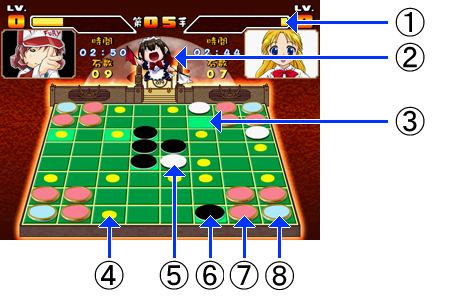
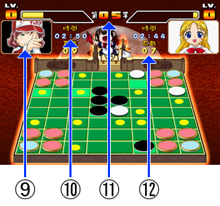
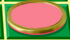
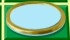

Here is some information on the elements of the mid-match game screen.
 |
 |
1. Mastery Meter. Fills completely at 3 bars. You'll see a character cut-in each time 1 bar is filled.
2. Shirome-chan. The flags she raises are used to indicate whose turn it is currently.
3. Power Point. At the end of your turn, you gain Mastery Meter relative to the number of Power Points with your discs on them.
4. Hit Point. These are spots where you are allowed to play. (This HP has nothing to do with your physical condition.)
5. White disc. These are the White player's discs.
6. Black disc. These are the Black player's discs.
7. Pre-set disc (Red).

Red discs are always treated as the opposite player's discs on any given turn.
On Black's turn, they're treated as White's discs, and vice versa.
Also, these pre-set discs (identified by their golden rings) cannot be targeted by Mastery Skills
8. Pre-set disc (Blue).

Blue discs are always treated as the current player's discs on any given turn.
On Black's turn, they're treated as Black's discs, and vice versa.
Also, these pre-set discs (identified by their golden rings) cannot be targeted by Mastery Skills
9. Selected character. On any given turn, the background of the current player's character will change. (TL Note: This is a lie. Not even the earlier version of the game this manual is intended for does this.)
10. Game timer. You lose if you run out of time. However, if you end a turn with less than 10 seconds remaining, your next turn will reset your timer to 10 seconds.
11. Turn count. This will only count up to 99 turns.
12. Score. This number is representative of the number of a player's discs on the board + blue discs. Red discs are not added to this number.
|